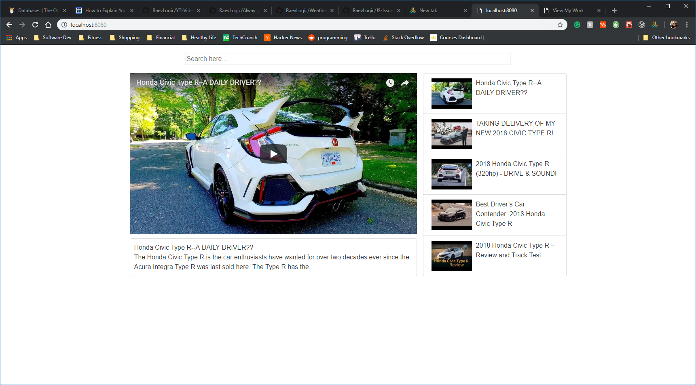
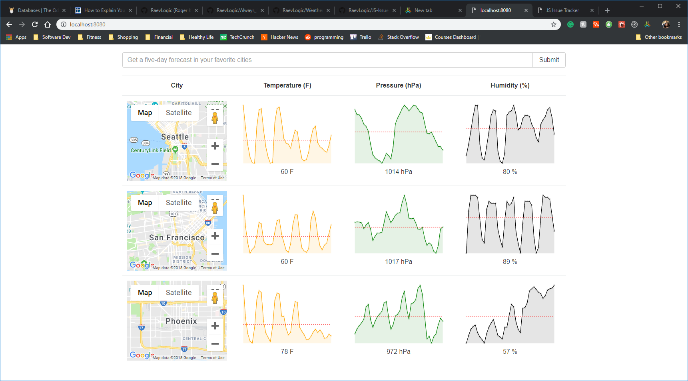
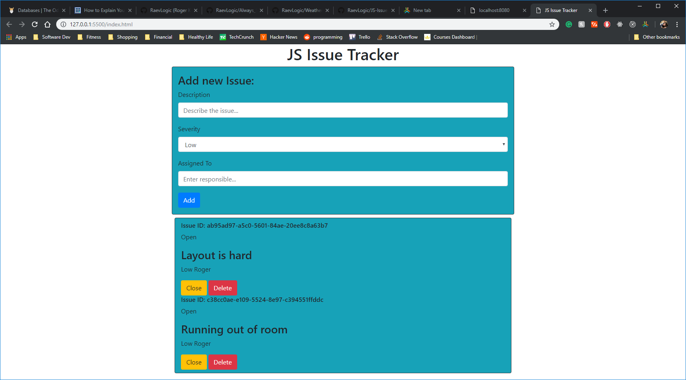

My Work
Check out some of my projects...

Project
Github
Video player that uses the Youtube Data v3 API. Built with React, NodeJS to host on Heroku, and a boilerplate from Modern React with Redux.

Project
Github
This is a weather app built with React, Redux, and NodeJS for Heroku Deployment. It displays multiple 5-day forecasts based on user specified cities in the US. Utilizes Google's JavaScript Map API and the OpenWeatherMap API.

Project
Github
An issue tracker app built with JavaScript using the browser's local storage to store issues. Uses Chance.js to generate random guids for the issues, which also get stored in local storage.